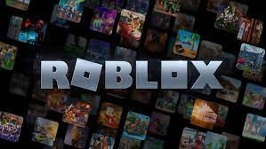

TOP 10 JOGOS DE UM CIDADÃO COMUM DA COREIA DO NORTE
Olá caro espectador, tudo bem contigo? Tu muito provavelmente estás aqui por seres um macaco ambulante primata bípede que é gamer.
Aqui verás a opinião de alguém que vive na gloriosa democracia da Coreia do NORTE! Ele jogou muitos jogos bons!
E agora veremos quais são:
1. Lethal Company
Lethal Company é um jogo cooperativo de até quatro pessoas desenvolvido pela Zeekerss. Ele foi lançado em acesso antecipado para Microsoft Windows em outubro de 2023 e ganhou popularidade na loja Steam. Os jogadores são encarregados de coletar sucata de luas abandonadas e industrializadas, enquanto têm que evitar armadilhas, perigos ambientais e monstros. Eles são funcionários contratados que trabalham para a "Empresa" e recebem períodos de três dias para cumprir a cota de lucro persistentemente crescente.
2. Victoria III
Victoria 3 é um jogo de estratégia e geopolítica produzido e lançado pela Paradox Interactive em 25 de outubro de 2022. Victoria 3 abrange a história mundial de 1836 a 1936 e permite ao jogador controlar um dos mais de 100 países daquele período. O jogo concentra-se em política e economia, com jogabilidade focada em atrair e apaziguar grupos populacionais ("pops"), grandes blocos de pessoas com interesses comuns. A população possui uma variedade de interesses e ideologias, que podem influenciar o rumo do jogo.
3. Terraria
Terraria é um jogo sandbox de ação e aventura de 2011 desenvolvido pela Re-Logic. O jogo foi lançado pela primeira vez para Windows e, desde então, foi portado para outras plataformas de PC e console. O jogo apresenta exploração, criação, construção, pintura e combate com uma variedade de criaturas em um mundo 2D gerado processualmente que dá para jogar com amigos.
4. Left 4 Dead 2
Left 4 Dead 2, é uma sequência, é um jogo multiplayer de survival horror e cooperação de tiro em primeira pessoa. É a sequência do jogo ganhador de prêmios da Valve Corporation, Left 4 Dead. O jogo foca a jogabilidade cooperativa do original e usa a engine Source da Valve, a mesma engine usada em Left 4 Dead. O jogo fez a sua estreia na E3 2009.
Como o original, Left 4 Dead 2 se passa durante um apocalipse zumbi, e foca em quatro sobreviventes lutando contra hordas dos Infectados.
5. Garry's Mod
Garry's Mod é um jogo sandbox de 2006 desenvolvido pela Facepunch Studios e publicado pela Valve. O modo de jogo base de Garry's Mod não tem objetivos definidos e fornece ao jogador um mundo no qual manipular livremente objetos. Outros modos de jogo, notavelmente Trouble in Terrorist Town e Prop Hunt, são criados por outros desenvolvedores como mods e são instalados separadamente, por meios como o Steam Workshop.
6. Undertale
Undertale é um RPG eletrônico criado pelo desenvolvedor independente norte-americano Toby Fox. Nele, o jogador pode controlar uma criança humana que caiu em uma caverna, uma região grande e isolada sob a superfície da Terra, separada por uma barreira mágica. Vários monstros podem ser encontrados durante sua missão para retornar à superfície, principalmente através do sistema de combate; o jogador navega pelos ataques em formato bullet hell do oponente e pode optar por pacificar ou subjugar os monstros para poupá-los em vez de assassiná-los. Essas escolhas causam mudanças no diálogo, nos personagens e na história com base nos resultados.
7. Oneshot
OneShot é um jogo de aventura com elementos de puzzle desenvolvido pelo estúdio independente Future Cat. Baseado em uma versão grátis lançada em 2014, foi lançado para Steam em 8 de dezembro de 2016 e em 12 de março de 2020 no itch.io. Uma versão para consoles, OneShot: World Machine Edition, foi lançada em 22 de setembro de 2022 para Nintendo Switch, PlayStation 4, e Xbox One. Descrito como um jogo onde "o mundo sabe que você existe", tanto a jogabilidade quanto a narrativa envolvem elementos metaficcionais. Muitos quebra-cabeças envolvem a interação com o sistema operacional fora do jogo. Narrativamente, o jogador é um personagem separado de seu protagonista Niko, uma criança-gato que chega a um mundo desconhecido sem sua luz solar e, eventualmente, pretende salvá-lo substituindo seu sol, uma lâmpada, no topo de uma torre.
8. Lego Marvel SuperHeroes
O enredo do jogo mostra vários heróis do Universo Marvel unindo forças para frustrar os esquemas do Doutor Destino e Loki, que também recrutaram vários vilões para ajudá-los, e buscam conquistar a Terra usando o Raio da Perdição, um dispositivo construído a partir dos fragmentos do tabuleiro do Surfista Prateado chamado "Tijolos Cósmicos". Lego Marvel Super Heroes recebeu críticas geralmente positivas, e é atualmente o videogame Lego mais vendido de todos os tempos. [5] Um spin-off intitulado Lego Marvel's Avengers foi lançado em 26 de janeiro de 2016, e uma sequência intitulada Lego Marvel Super Heroes 2 foi lançada em 14 de novembro de 2017.
9. Portal 2
Portal 2 é um jogo eletrônico de quebra-cabeça em plataformas desenvolvido e publicado pela Valve Corporation. O jogo foi lançada em abril de 2011 para as plataformas Microsoft Windows, macOS, Linux, PlayStation 3 e Xbox 360. A versão digital para computadores é distribuída pelo Steam, o serviço online da Valve, enquanto todas as edições de varejo foram distribuídas pela Electronic Arts. Em fevereiro de 2022, uma coleção com os dois títulos, intitulado de Portal: Companion Collection foi anunciado para o console Nintendo Switch. Da mesma forma que no jogo original Portal (2007), os jogadores resolvem quebra-cabeças colocando portais e se teletransportando entre eles.
10. Roblox

Roblox (anteriormente estilizado como ROBLOX) é uma plataforma de criação de jogos MMO e sandbox baseados normalmente em mundo aberto, multiplataforma e simulação que permite criar do zero seu próprio mundo virtual chamado de 'experiência' ou 'place' onde os milhares de jogadores da plataforma podem interagir sobre. O Roblox possui mais de 500.000 criadores de experiências e 700 milhões de usuários ativos mensais, que já registraram mais de 300 milhões de horas de uso. O grupo de desenvolvimento da experiência, a Roblox Corporation, emprega mais de 1000 pessoas no mundo inteiro. Em 2019, a Roblox se tornou o "jogo" mais popular no mundo.